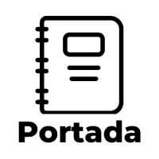
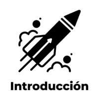
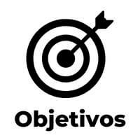
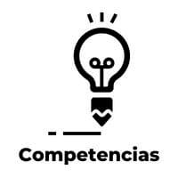
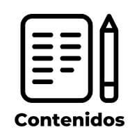
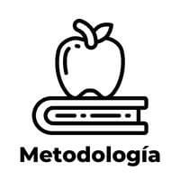
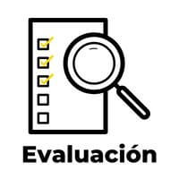
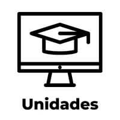

La programación didáctica se compone de varios elementos que se interrelacionan entre sí para diseñar un proceso de enseñanza-aprendizaje óptimo y eficaz. Aprende el concepto de cada uno y cómo trabajarlo en tu documento para completar tu programación didáctica sin morir en el intento.
Los 8 elementos de la programación didáctica
Descubre las partes de la programación didáctica para aprender a trabajar con cada una de ellas adaptándolas a tu propuesta. Te contamos cuáles son las claves de cada apartado, trucos para ser original o ejemplos para entender los conceptos fácilmente:

1. Portada
Antes de entrar de lleno con el contenido de la programación, hay que hablar de la portada. No significa que sea lo primera que hagas, pero sí será lo que el tribunal verá antes de leer tu trabajo. En esta parte debes indicar tus datos y los que identifican a la programación (nombre, apellidos, asignatura, etc.). Como es la primera impresión que los miembros del tribunal tienen de tu programación de aula, procura usarla para diferenciarte de los demás. Debe llamar su atención y gritar ¡léeme, merezco la pena!

2. Introducción
Esta parte es como la cabecera de Juego de Tronos. Lo que cuentas y cómo lo cuentas debe llevar, como si levitara, al lector hacia el meollo de la cuestión. Esta es la fase previa a lo que de verdad quieres contar, a la parte con más relevancia dentro de tu programación didáctica. La introducción es el elemento en el que justificas tu programación y defines el contexto. Es decir, se trata de poner en situación a quien lee. Igual que Juego de Tronos nos muestra un mapa con los diferentes reinos y la música y el movimiento nos envuelve, tú debes envolver al tribunal en tu relato. Si consigues engancharles y despertar su curiosidad, la predisposición que crean para leer el resto de tu programación te va a dar puntos, seguro.

3. Objetivos
El tercer elemento de una programación didáctica son los objetivos. Seguro que alguna vez has tomado decisiones o has hecho planes porque querías conseguir algo en concreto. Por ejemplo, quiero un móvil nuevo, así que voy a ahorrar; o quiero ponerme en forma, así que empezaré a ir al gimnasio. ¡Justamente eso son los objetivos! Se trata de aquello que queremos lograr. Así de fácil.

4. Competencias
Las competencias son el elemento más reciente en las programaciones didácticas, pero no por ello debe traer problemas. En Primaria y Secundaria la LOMCE estableció 7 competencias clave y la LOMLOE las ha ampliado a 8. En torno a ellas gira el proceso de enseñanza-aprendizaje. Además, añade unas competencias específicas.
En Formación Profesional, en cambio, existen las competencias profesionales, personales y sociales, la competencia general de cada ciclo formativo y las cualificaciones profesionales, con sus correspondientes unidades de competencia. Aunque parezca complicado todo este batiburrillo de términos, las competencias nos las da el currículo, así que solo debemos tomarlas y llevarlas a nuestra programación.

5. Contenidos/Saberes básicos
Aquí sucede lo mismo que antes. Los contenidos que debemos tratar en clase, los que los alumnos deben aprender, vienen dados por el currículo. Es importante que sepas que hay unos contenidos mínimos pactados a nivel nacional y unos contenidos específicos para cada Comunidad Autónoma, más desarrollados. Por tanto, a la hora de definir los contenidos de la programación didáctica, asegúrate de que incluyes todos mirando el currículo de tu comunidad. Pero también especifica cuáles son los contenidos mínimos que los alumnos deben aprender para aprobar la asignatura.

6. Metodología
Este es elemento más divertido en la programación didáctica. Con la metodología, tú decides qué hacer y cómo. Hasta ahora hemos visto partes de la programación que venían predefinidas por ley. Este es el momento de decidir qué quieres hacer clase para que los alumnos aprendan los contenidos, adquieran las competencias y logren los objetivos propuestos. Cualquier actividad, recurso, tarea, etc. que propongas, si está argumentada, es válida. Así que deja volar tu imaginación y piensa cómo te gustaría aprender a ti. Si consigues crear tu propia metodología, aplicando tu propio estilo y volcando tu personalidad, ten seguro que vas a destacar entre los demás opositores. Además, si transmites pasión y confianza, va a ser mucho más fácil convencer al tribunal de que mereces una plaza.

7. Evaluación
¿Recuerdas que hemos dicho que la metodología sirve para que los alumnos aprendan unos contenidos, adquieran unas competencias y logren unos objetivos? Pues la evaluación en la programación didáctica es el momento de ver en qué grado lo han conseguido. Aquí también contamos con estándares o resultados de aprendizaje y con criterios de evaluación que nos da el currículo, y nos guían a la hora de decir qué tal el alumno ha superado lo que se proponía. Así pues, la evaluación está muy ligada a la metodología. Debemos pensar cómo evaluar y calificar las actividades que proponíamos en aquel apartado. Por ejemplo, un examen de cinco preguntas para desarrollar, donde cada una valdrá dos puntos. Ya entraremos en esto con más detalle. Lo que sí tiene que tener claro es que en este apartado de la programación didáctica se cierra el ciclo; es donde vemos cómo ha funcionado el proceso de enseñanza-aprendizaje. Por supuesto, lo puedes aprovechar para identificar puntos fuertes y puntos débiles, de cara a mejorar cada año.

9. Unidades didácticas/Situaciones de aprendizaje
Toda programación didáctica se concreta en las unidades didácticas o situaciones de aprendizaje. Son concreciones de la programación, establecidas en un periodo concreto. Están claramente orientadas al trabajo en el aula, así que su núcleo son las actividades. En cada unidad didáctica podemos establecer objetivos operativos, contenidos extendidos y especificar recursos que vayamos a usar en esas actividades.
8. Conclusión, bibliografía y anexos
La conclusión de la programación didáctica tiene la función de sintetizar las ideas clave y poner punto final al documento. El tribunal debe quedar con buen sabor de boca. Llegados a este punto, no puede quedar nada en el tintero.
En la bibliografía señala qué libros, webs o recursos te han servido para elaborar tu programación didáctica. Sigue los estándares para referenciarlos, por ejemplo las normas APA.
En los anexos incluye, si lo necesitas, la información que no hayas podido incluir en la programación didáctica. Por ejemplo, un esquema o un mapa conceptual que facilite al tribunal entender alguna parte del documento, la relación de unidades didácticas, recursos didácticos o cualquier otro material. Recuerda que es tu programación y eres tú quien decide.
Síguenos en Instagram para encontrar resúmenes visuales
¿Por qué estos apartados en la programación didáctica?
De acuerdo con la Ley Orgánica 2/2006, de 3 de mayo, de Educación (LOE), modificada por la Ley Orgánica 8/2013, de 9 de diciembre, para la mejora de la calidad educativa (LOMCE), en su artículo 6 en su apartado 2 dice que «el currículo estará integrado por los siguientes elementos»:
a) Los objetivos de cada enseñanza y etapa educativa.
b) Las competencias, o capacidades para aplicar de forma integrada los contenidos propios de cada enseñanza y etapa educativa, con el fin de lograr la realización adecuada de actividades y la resolución eficaz de problemas complejos.
c) Los contenidos, o conjuntos de conocimientos, habilidades, destrezas y actitudes que contribuyen al logro de los objetivos de cada enseñanza y etapa educativa y a la adquisición de competencias. Los contenidos se ordenan en asignaturas, que se clasifican en materias, ámbitos, áreas y módulos en función de las enseñanzas, las etapas educativas o los programas en que participen los alumnos y alumnas.
d) La metodología didáctica, que comprende tanto la descripción de las prácticas docentes como la organización del trabajo de los docentes.
e) Los estándares y resultados de aprendizaje evaluables.
f) Los criterios de evaluación del grado de adquisición de las competencias y del logro de los objetivos de cada enseñanza y etapa educativa.
Elementos de la programación didáctica según autores
Numerosos académicos han establecido también una estructura para la programación didáctica. Hemos seleccionado algunas aportaciones interesantes que puedes tomar de referencia y utilizar de bibliografía.
Antúnez, Del Carmen, Imbernón, Parcerisa y Zabala (1992):
- Contenidos.
- Objetivos didácticos.
- Tareas o actividades.
- Recursos puestos a disposición de los alumnos y de las actividades.
- Criterios y momentos de la evaluación.
- Dinámica del grupo-clase.
Observamos que la esencia es la misma: unos objetivos a los que llegar, unos contenidos que asimilar, unas actividades y unos recursos para trabajar esos contenidos, una metodología (aquí denominada dinámica de clase) y una evaluación. No vemos, en cambio, las competencias, porque fueron añadidas en 2013 con la LOMCE.
- Del Valle, Velázquez y Díaz (2003):
- Objetivos generales de etapa.
- Objetivos generales del área, materia, módulo.
- Relación de los objetivos generales de etapa con los objetivos generales de área, materia, módulo.
- Relación de los objetivos generales de área, materia, módulo con los objetivos generales para el curso o ciclo que se programe y los contenidos.
- Distinción de contenidos conceptuales, procedimentales y actitudinales.
- Temporización de los contenidos.
- Progresión de los contenidos de un curso a otro.
- Metodología de trabajo.
- Orientaciones para la evaluación. Criterios y procedimientos de evaluación y criterios de calificación.
- Atención a la diversidad.
- Actividades complementarias y extracurriculares.
- Recursos didácticos.
- Transversalidad.
Del Valle y García (2007):
- Introducción.
- Objetivos.
- Contenidos y su temporalización.
- Metodología.
- Evaluación.
- Medidas de atención a la diversidad.
- Actividades complementarias, extracurriculares e interdisciplinares.
- Temas transversales.
- Recursos didácticos.
- Innovación e investigación.
- Desarrollo de las unidades didácticas.
- Bibliografía.
Las posibilidades son infinitas. Se pueden establecer multitud de capítulos dentro de la programación didáctica, desarrollando más o menos el índice, pero la esencia es la que te contamos al principio. Los elementos básicos de una programación didáctica son objetivos, competencias, contenidos, metodología y evaluación, envueltos con una introducción y una portada al principio, y los anexos y una bibliografía al final.